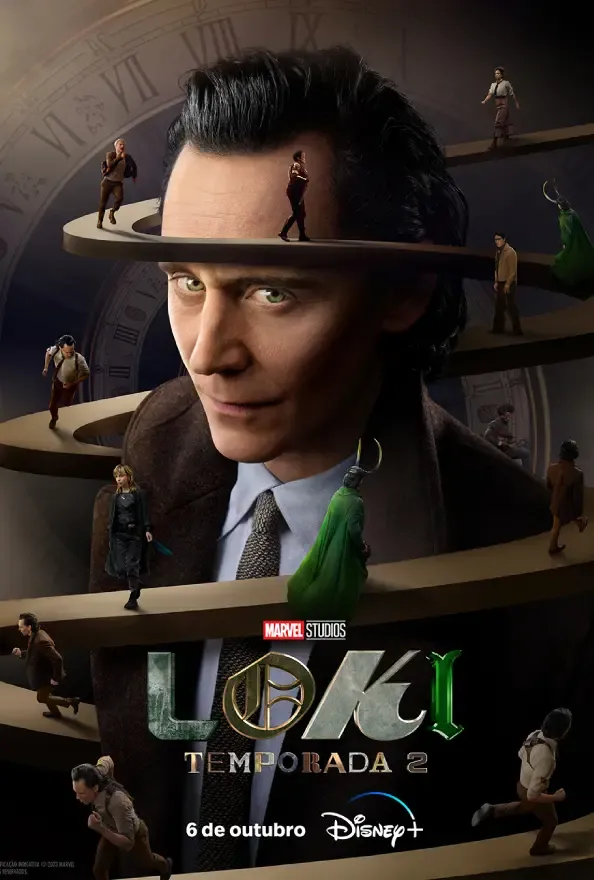

Loki
| Informações geral | |
|---|---|
| Formato - | série |
| Gênero - | Ação,aventura |
| Duração - | 42 - 54 minutos |
| Estado - | Concluída |
Loki é uma série estadunidense criada para o Disney+ por Michael Waldron, baseada no personagem de mesmo nome da Marvel Comics. É a terceira série televisiva do Universo Cinematográfico Marvel (MCU) produzida pelo Marvel Studios, compartilhando continuidade com os filmes da franquia e ocorrendo após os eventos do filme Vingadores: Ultimato (2019). Waldron atua como roteirista principal, com Kate Herron dirigindo a primeira temporada. Tom Hiddleston repete seu papel como Loki da série de filmes, com Gugu Mbatha-Raw, Wunmi Mosaku, Eugene Cordero, Tara Strong, Owen Wilson, Sophia Di Martino, Sasha Lane, Jack Veal, DeObia Oparei, Richard E. Grant e Jonathan Majors também estrelando. Em setembro de 2018, o Marvel Studios estava desenvolvendo uma série de séries limitadas para o Disney+, centradas em personagens coadjuvantes dos filmes do UCM. Uma série protagonizada por Hiddleston como Loki foi confirmada em novembro de 2018. Waldron foi contratado em fevereiro de 2019, e Herron ingressou naquele mês de agosto. As filmagens da série começaram em janeiro de 2020 em Atlanta, Geórgia e foram suspensas em março de 2020 devido à pandemia de COVID-19. A produção foi retomada em setembro e concluída em dezembro.
Depois de roubar o Tesseract durante os eventos de Vingadores: Ultimato, uma versão alternativa de Loki é trazida para a misteriosa Autoridade de Variância Temporal (AVT), uma organização burocrática que existe fora do tempo e do espaço, e monitora a linha do tempo. Eles dão a Loki uma escolha: ser apagado da existência por ser uma "variante do tempo" ou ajudar a consertar a linha do tempo e impedir uma ameaça maior. Loki acaba preso em seu próprio thriller policial, viajando no tempo e alterando a história da humanidade.
Tom Hiddleston como Lokiː O irmão adotivo de Thor e deus da travessura baseado na divindade mitológica nórdica de mesmo nome.[4] Esta é uma versão alternativa, a "variante do tempo" de Loki, que criou uma nova linha do tempo em Vingadores: Ultimato (2019) começando em 2012.[5] Por causa disso, ele não passou pelos eventos de Thor: O Mundo Sombrio (2013) ou Thor: Ragnarok (2017) que reformou o personagem, anteriormente vilão, antes de sua morte em Vingadores: Guerra Infinita (2018).[6][7] Michael Waldron comparou Loki ao cofundador da Apple Inc. Steve Jobs, uma vez que ambos foram adotados e adoram estar no controle.[8] Hiddleston expressou interesse em retornar ao papel a fim de explorar os poderes de Loki, particularmente sua transformação, que atua na exploração da identidade em série.[7] O sexo de Loki na série é denotado pela Autoridade de Variância Temporal como "fluido", referindo-se à fluidez de gênero do personagem na Marvel Comics que havia sido especulado anteriormente no UCM dada sua habilidade de metamorfose.[9][10] Waldron disse estar ciente de quantas pessoas se identificam com a fluidez de gênero de Loki e estavam "ansiosos por essa representação".[11] A série também revela Loki como bissexual, tornando-se o primeiro grande personagem "queer" no UCM.[12] A série explora mais as habilidades mágicas de Loki, como sua telecinesia e rajadas de magia.
| Informações geral | |
|---|---|
| Formato - | série |
| Gênero - | Ação,aventura |
| Duração - | 42 - 54 minutos |
| Estado - | Concluída |